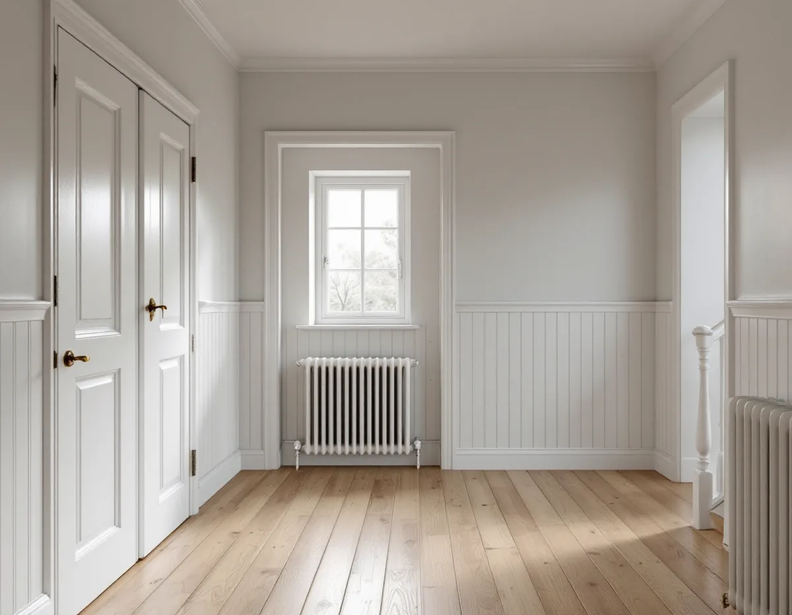
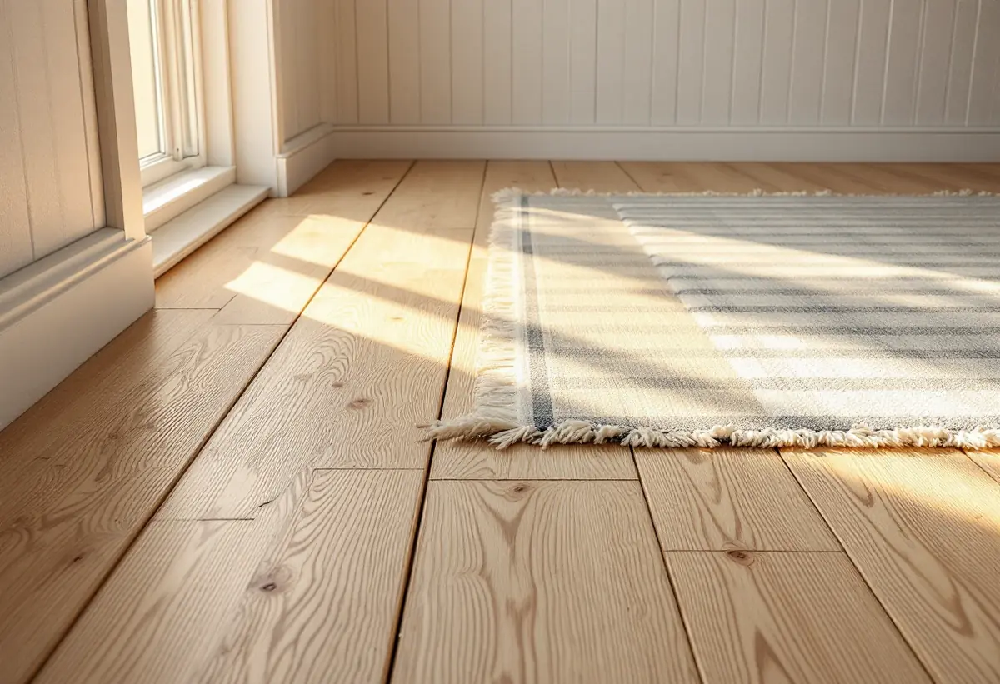

Platsbesök
Vi tittar på bjälklag, värmesystem och nuvarande golv och frågar vilka rum som ska bli varma.
Ett varmt golv i hallen eller köket är en vanlig önskan när en äldre villa renoveras. Under ett trägolv kräver golvvärmen dock rätt temperatur, rätt fuktskydd och ett bjälklag som håller värmen kvar. Geal Entreprenad AB lägger golv i Långbro, Herrängen, Långsjö och övriga Älvsjö, med gratis platsbesök, skriftligt kostnadsförslag och ROT-avdraget direkt på fakturan.

Stadens parkplan för Herrängen och Långsjö berättar att John Edvard Lignell, som bodde på Örby slott, köpte Herrängens gård 1901 och började stycka av marken. Köparna var egnahemsbyggare, och det blev början på villastaden. Fram till 1910 fanns en viss villabebyggelse, men det var därefter som exploateringen tog fart med villor, småstugor och sommarhus.
Områdesfakta för 2025 visar hur mycket av detta som står kvar: 1 423 bostäder i småhus i Långbro, 1 143 i Herrängen och 872 i Långsjö. Ett hus som byggdes för sommaren eller för radiatorer är sällan byggt med golvvärme i tankarna. Därför börjar vi med bjälklaget, inte med golvet.

Golvbranschens handbok Trägolv på golvvärme anger att yttemperaturen på ett trägolv inte får överstiga 27 °C, och att det gäller även under mattor och andra övertäckningar, där temperaturen blir högre än på resten av golvet. Golvvärmetillverkarna dimensionerar enligt handboken sina system för högst 26 °C vid golvytan. Blir golvet varmare finns risk för en forcerad uttorkning och bestående skador.
Träslaget spelar roll. Lamellparkett av bok och kanadensisk lönn sväller och krymper mer än andra träslag, och i ett kallt och torrt klimat som det svenska anses de olämpliga på golvvärme. Massiva trägolv rör sig mer än lamellgolv, oavsett golvvärme, och handboken räknar med en krympning på ungefär en procent av brädans bredd vid 30–60 procent luftfuktighet. Breda brädor ger därför större springor på vintern än smala stavar.
I en äldre villa blir golvvärmen ofta ett tillägg till radiatorerna. Enligt handboken kräver nya radiatorer ungefär 55 °C när det är som kallast ute, och äldre radiatorsystem ännu mer, medan golvvärmen behöver ungefär 15 grader lägre. Står golvvärmen bara för en del av huset krävs därför i allmänhet en separat styrning av vattentemperaturen till de två systemen. Normal framledningstemperatur för golvvärme ligger enligt handboken på 30–40 °C.
Väljs elektrisk golvvärme under trä- eller laminatgolv ska varje rum ha egen termostat, med en golvgivare som begränsar temperaturen. Golvvärmen får inte styras med enbart en rumsgivare, och golvytans effekt ska vara högst 75 watt per kvadratmeter. Behövs mer är det enligt handboken tilläggsisolering eller en kompletterande värmekälla som gäller. Ska köket få golvvärme finns mer under köksrenovering i Älvsjö.
Vid renovering är de lätta golvvärmesystemen vanligast, som läggs på eller i träbjälklaget. Handboken betonar att en värmebehovsberäkning är särskilt viktig i äldre hus och att möjligheten att tilläggsisolera bjälklaget bör undersökas. Isoleringen ska fylla hela bjälklagsfacket och ligga an mot golvvärmen, och det får inte finnas luftspalter mellan isolering och bjälkar. Vid ombyggnad kan en vindväv minska luftrörelserna som kyler isoleringen och slingorna.
Trägolvet ska ha ett fuktskydd, till exempel en ångspärr, så nära golvet som möjligt. Det är obligatoriskt på golvvärme och på bjälklag över en ventilerad krypgrund. Ligger bjälklaget mot mark ska fuktförhållandena kartläggas och eventuella problem åtgärdas innan golvvärmen läggs in. Mer om hur golvet byggs upp i stort finns på sidan om golvläggning.
Ligger det redan en lamellparkett på golvvärme och den ska slipas om, finns en risk som Golvbranschen beskriver som stavsläpp: slitskiktet lossnar från skiktet under. Det kan bero på att limfogen har blivit spröd med åren och på för stora fuktrörelser, och vibrationerna från slipningen kan få en försvagad limfog att brista. Branschen rekommenderar 15–25 °C och 30–60 procent luftfuktighet, och med golvvärme högst 27 °C på ytan.
Det finns inget sätt att i förväg veta om ett golv kommer att släppa, och det kan hända flera månader efter en renovering. Några enstaka stavar kan oftast limmas tillbaka. Vi berättar om risken innan vi slipar en lamellparkett, så att du kan väga en slipning mot ett nytt golv.
Vi tittar på bjälklag, värmesystem och nuvarande golv och frågar vilka rum som ska bli varma.
Vi går igenom golvvärmens typ, styrning och träslag innan något beställs.
Isolering, golvvärme, fuktskydd och golv redovisas som egna poster.
Gamla skikt tas bort och bjälklaget isoleras och förbereds.
Golvvärme, ångspärr och trägolv läggs vid rätt rumsklimat.
Golvvärmen startas enligt tillverkarens anvisningar och du får skötselråd.
Skatteverket ger rotavdrag för att slipa och byta golv i en bostad du äger, även ett fritidshus. Avdraget är 30 procent av arbetskostnaden, högst 50 000 kr per person och år, och rot och rut får tillsammans vara högst 75 000 kr.
Material, som golvvärmeslingor och golvbrädor, ger inget avdrag, och det gör inte heller resorna. Geal drar avdraget direkt på fakturan.
Mest påverkar om bjälklaget behöver isoleras, vilken golvvärme som väljs och hur stor golvytan är. Elarbetet för en elektrisk golvvärme är en egen post. Platsbesöket är gratis och kostnadsförslaget skriftligt.
Parkett, trägolv, klinker och slipning.
Golvläggning i Stockholm →Takbyte, takbesiktning och plåtarbeten.
Takläggare i Älvsjö →Långbro, Herrängen och Långsjö.
Takrenovering i Älvsjö →Byggrätt, gamla planer och planändring.
Byggföretag i Älvsjö →Villastad, nya grannhus och puts på trä.
Fasadrenovering i Älvsjö →Villastad, flerlägenhetsvillor och kök i lager.
Köksrenovering i Älvsjö →Villastad, egnahem och småstugor i Älvsjö.
Målare i Älvsjö →Plåttak för solceller, kupor och verandor i Älvsjö.
Plåtslagare i Älvsjö →